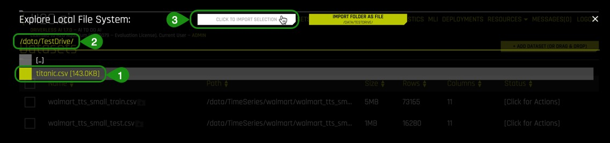
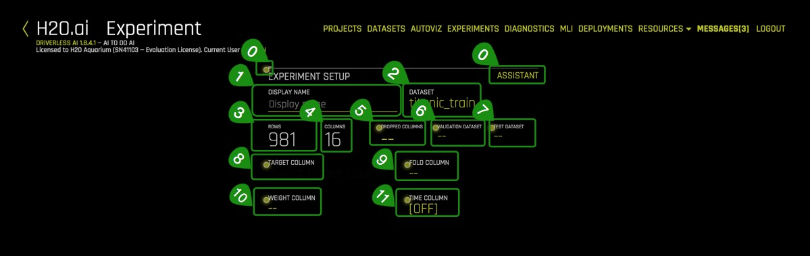
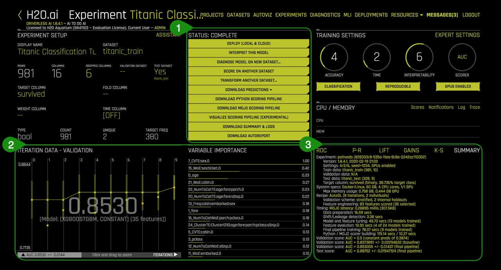
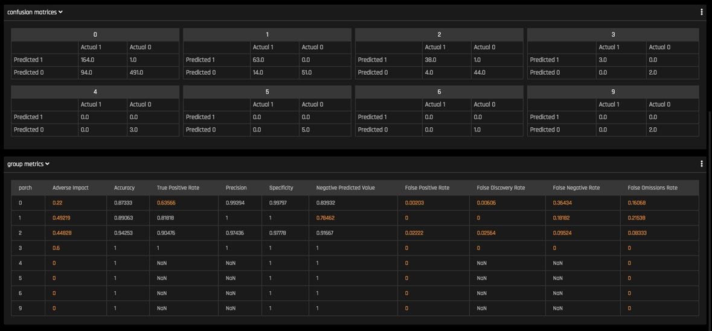
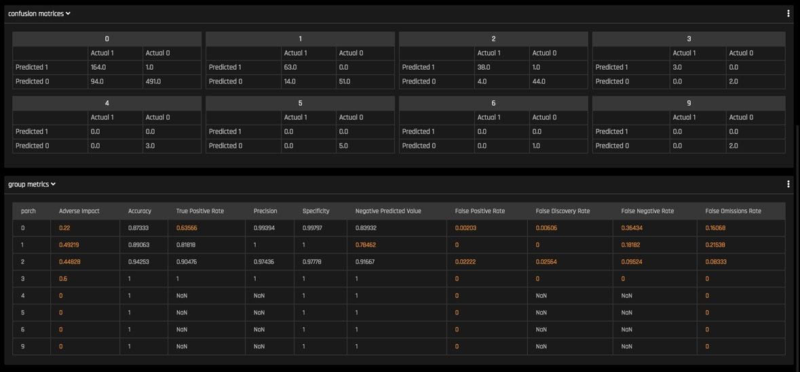

For this tutorial, we will explore the Titanic dataset from the perspective of a passenger life insurance company with H2O.ai's enterprise product, Driverless AI. We will explore possible riks factors derived from this dataset that could have been considered when selling passenger insurance during this time. More specifically, we will create a predictive model to determine what factors contributed to a passenger surviving.
In this overview of Driverless AI, you will learn how to load data, explore data details, generate Auto visualizations, launch an experiment, explore feature engineering, view experiment results and get a quick tour of the Machine Learning Interpretability report.
Note: This tutorial has been built on Aquarium, which is H2O's cloud environment that provides access to various tools for workshops, conferences, and training. The labs in Aquarium have datasets, experiments, projects, and other content preloaded. If you use your version of Driverless AI, you will not see the preloaded content.
A Two Hour Test Drive session: Test Drive is H2O's Driverless AI on the AWS Cloud. No need to download software. Explore all the features and benefits of the H2O Automatic Learning Platform.
- Need a Two Hour Test Drive session? Try it Now. Follow the instructions on this quick tutorial to get a Test Drive session started. After the Driverless AI Test Drive session starts, continue reading the remaining prerequisites of this tutorial then start Task 1: Product Tour.
- Already have a Two Hour Test Drive session? Continue reading the remaining prerequisites of this tutorial then start Task 1: Product Tour.
Note: Each Test Drive instance will be available to you for two hours, after which it will terminate. No work will be saved. If you need more time to further explore Driverless AI, you can always launch another Test Drive instance or reach out to our sales team via the contact us form.
- Basic knowledge of Machine Learning and Statistics
Welcome to the Driverless AI Datasets page!

The Driverless UI is easy to navigate. The following features, as well as a few datasets, are found on the Datasets page. We will explore these features as we launch an experiment in the next tasks.
- Projects: Projects Workspace for managing datasets and experiments menu option.
- Datasets: View of current datasets. Other features for datasets include the options to add a dataset, get dataset details, visualize, split, predict, rename, download, and delete.
- Autoviz: Visualize a dataset with all available graphs.
- Experiments: View of completed experiments. Experiments can be revised or deleted.
- Diagnostics: Diagnose a model and view model performance for multiple scorers based on the existing model and dataset.
- MLI: View a list of interpreted models or interpret a model.
- Deployments: Deploy the MOJO and Python scoring pipelines for you to test or to integrate into a final product. You can also deploy locally or in the cloud.
- Resources: The Resources dropdown menu provides you with links to view System Information, the Driverless AI User Guide and Help. From this dropdown menu, you can also download the Python Client, R Client, and the MOJO2 runtime, MOJO2 Py runtime, and MOJO2 R runtime.
- Messages[ ]: View news and upcoming Driverless AI events.
- Logout H2OAI: Logs you out of your current session.
- <: Go back to the previous page.
- H2OAI: Takes you back to the H2OAI Datasets Page.
- Driverless AI 1.X.X: Version of Driverless AI
- Add a Dataset(or Drag and Drop): Upload or add a dataset.
Deeper Dive and Resources
- Join the H2O community on Slack to Ask Questions. Post your questions, discuss use cases, give feedback, stay informed about the latest H2O.ai updates, and more.
- Learn more are about H2O Driverless through the H2O documentation.
- Explore H2O Product Documentation
- Learn more H2O Driverless by reviewing the FAQs
Artificial Intelligence and Machine Learning
The concepts found in this section are meant to provide a high-level overview of Machine Learning. At the end of this section, you can find links to resources that offer a more in-depth explanation of the concepts covered here.
Machine learning is a subset of Artificial intelligence where the focus is to create machines that can simulate human intelligence. One critical distinction between artificial intelligence and machine learning is that machine learning models "learn" from the data the models get exposed to. Arthur Samuel, a machine learning pioneer back in 1959, defined machine learning as a " field of study that gives computers the ability to learn without being explicitly programmed" [1]. A machine learning algorithm trains on a dataset to make predictions. These predictions are, at times, used to optimize a system or assist with decision making.
Machine Learning Training
Advances in technology have made it easier for data to be collected and made available. The available type of data will determine the kind of training that the machine learning model can undergo. There are two types of machine learning training, supervised and unsupervised learning. Supervised learning is when the dataset contains the output that you are trying to predict. For those cases where the predicting variable is not present, it's called unsupervised learning. Both types of training define the relationship between input and output variables.
In machine learning, the input variables are called features and the output variables labels. The labels, in this case, are what we are trying to predict. The goal is to take the inputs/features and use them to come up with predictions on never-before-seen data. In linear regression, the features are the x-variables, and the labels are the y-variables.
A machine learning model defines the relationship between features and labels. When models are trained, you can train a model by feeding it examples. Examples are a particular instance of data. You can have two types of examples: labeled and unlabeled. Labeled examples are those where the x and y values (features, labels) are known. Unlabeled examples are those where we know the x value, but we don't know what the y value is (feature,?)[1]. Your dataset is like an example; the columns that will be used for training are the features; the rows are the instances of those features. The column that you want to predict is the label.
Supervised learning takes labeled examples and allows a model that is being trained to learn the relationship between features and labels. The trained model is then tested with unlabeled data, and it's allowed to predict the y value (label) for the unlabeled data. Testing a trained model with unlabeled data is called unsupervised training [1]. Note that H2O Driverless AI creates models with labeled examples.
Data Preparation
A machine learning model is as good as the data that is used to train it. If you use garbage data to train your model, you will get a garbage model. With this said, before uploading a dataset into tools that will assist you with building your machine learning model such as Driverless AI, ensure that the dataset has been cleaned and prepared for training. The process of transforming raw data into another format, which is more appropriate and valuable for analytics, is called data wrangling.
Data wrangling, which can include extractions, parsing, joining, standardizing, augmenting, cleansing, consolidating, and filtering, is highly recommended to be done before uploading the dataset to Driverless AI. Data preparation includes the dataset being in the correct format for what you are trying to do. Duplicates have been removed. Missing data is fixed or removed, and finally, categorial values have been transformed or encoded to a numerical type. Finally, proper transformations have been done on the dataset, such as scaling, decomposition, and aggregation, otherwise known as feature engineering [2]. Tools like Python datatable, Pandas and R are great assets for data wrangling.
Driverless AI can do some data wrangling. Data wrangling can be done via a data recipe, the JDBC connector or through live code which will create a new dataset by modifying the existing one.
Data Transformation/Feature Engineering
Data transformation or feature engineering is the process of creating new features from the existing ones. Some data transformations include looking at all the features and identifying which features can be combined to make new ones that will be more useful to the performance of the model. For categorical features, the recommendation is for classes that have few observations to be grouped to reduce the likelihood of the model overfitting. Additionally, dummy variables are introduced for categorical features to facilitate machine learning since many algorithms cannot handle categorical features directly. Last but not least, remove features that are not used or are redundant [3]. These are only a few suggestions when approaching feature engineering. Feature engineering is very time-consuming due to its repetitive nature; it can also be costly. The next step in creating a model is selecting an algorithm.
Algorithm Selection
"Machine learning algorithms are described as learning a target function (f) that best maps input variables (x) to an output variable(y): Y= f(x)" [4]. In supervised learning, there are many algorithms to select from for training. The type of algorithm(s) will depend on the size of your data set, structure, and the type of problem you are trying to solve. Through trial and error, the best performing algorithms can be found for your dataset. Some of those algorithms include linear regression, classification, regression trees, random forests, naive Bayes, and random forest, boosting, to name a few [5].
Model Training
Datasets
One good practice when training a machine learning model is to split up your dataset into subsets: training, validation, and testing sets. A good ratio for the entire dataset is 70-15-15, 70% of the whole dataset for training, 15% for validation, and the remaining 15% for testing. The training set is the data that will be used to train the model, and it needs to be big enough to get significant results from it. The validation set is the data that has been held back from the training and will be used to evaluate and adjust the hyperparameters of the trained model and hence adjust the performance. Finally, the test set is data that has also been held back and will be used to confirm the results of the final model [1].

Another part of model training is fitting and tuning the models. For fitting and tuning, hyperparameters need to be tuned, and cross-validation needs to take place using only the training data. Various hyperparameters values will need to be tested. Additionally, a cross-validation loop will be set to calculate the cross-validation score for each set of hyperparameters for each algorithm. Based on the cross-validation score and hyperparameter values, you can select the model for each algorithm that has been tuned with training data and test is it using your test set. The performance of your regression model can be evaluated by performance metrics such as the Mean Square Error (MSE), ROC Curve, Prec-Recall, LIFT, and Gain, to name a few.
What are the challenges in AI Model Development?
One of the significant challenges faced in developing a single production-ready model is that it can take weeks or months to build it. Developing a model involves feature engineering, model building, and model deployment. All tasks are very repetitive, time-consuming, require advanced knowledge of feature generation, algorithms, parameters, and model deployment. Finally, there needs to be in-depth knowledge and confidence in how the model was generated to explain and justify how the model made its decisions.
What is Automated Machine Learning, and why is it important?
AutoML or Automated Machine Learning is the process of automating algorithm selection, feature generation, hyperparameter tuning, iterative modeling, and model assessment. AutoML tools such as H2O Driverless AI makes it easy to train and evaluate machine learning models. Automating the repetitive tasks of Machine Learning Development allows people in the industry to focus on the data and the business problems they are trying to solve.
References
[1] Google's Machine Learning Crash Course
[2] About Train, Validation and Test Sets in Machine Learning
[3] Data Science Primer - Data Cleaning
[5] Towards Data Science- Supervised vs Unsupervised Learning
[6] Selecting the best Machine Learning Algorithm for your regression problem
Deeper Dive and Resources
1. Navigate back to the H2O Driverless AI Datasets page.
About the Dataset
The dataset used for this experiment is a version of the Titanic Kaggle dataset. This dataset contains the list of estimated passengers aboard the RMS Titanic.
The RMS Titanic was a British commercial passenger liner that sank after colliding with an iceberg in the North Atlantic Ocean on April 15, 1912. More than 1,500 people lost their lives from an estimated 2,224 passengers and crew members while on their way to New York City from Southampton.
This tragedy shocked the international community and led to better safety regulations for ships. The lack of lifeboats, amongst other things, was one of the factors that resulted in a significant loss of life. Although there was some element of luck involved in surviving the sinking, some groups of people were more likely to survive than others.

Titanic dataset:
1309 rows, one row per passenger, and 16 columns representing attributes of each passenger:
Attribute | Definition | Key |
passenger Id | Id randomly generated | - |
pclass | Passenger Class | 1= 1st, 2 =2nd, 3=3rd |
survived | Survival | 0=No, 1=Yes |
name_with_salutations | Passenger name | - |
name_without_salutations | Passenger name without salutations | - |
sex | Sex | Female, Male |
age | Age in years | - |
sibsp | Number of siblings/Spouse aboard | - |
parch | Number of Parents/Children aboard | - |
ticket | Ticket number | - |
fare | Passenger fare | - |
cabin | Cabin number | - |
embarked | Port of Embarkment | C = Cherbourg, Q = Queenstown, S = Southampton |
boat | Boat number | - |
body | Body number | - |
home.des | Home Destination | - |
Add the Data
1. Click on Add a Dataset(or Drag and Drop)
2. Select FILE SYSTEM

3. Enter the following /data/TestDrive/titanic.csv into the search bar. Select titanic.csv then Click to Import Selection.

4. If the file loaded successfully, then you should see an image similar to the one below:

Things to Note:
- You can view:
- Dataset filename
- File size
- Number of rows/columns
- File status
- Option to go back to the previous page
Deeper Dive and Resources
- Learn More About the Type of Dataset File formats that Can be Uploaded
- For more datasets, check out Kaggle Datasets
Details
We are now going to explore the Titanic dataset that we just loaded.
1. Continuing on the Dataset Overview page, click on the titanic.csv dataset. The following options will appear:

- Details - View a summary of the dataset or preview the dataset
- Visualize - Visualize the dataset with available graphs
- Split - Split the dataset
- Predict - Run an experiment using Driverless AI
- Rename - Rename the dataset
- Download - Download the dataset
- Delete - Delete the dataset
Note: A dataset can only be deleted if it's not being used in an experiment. Otherwise, you must delete the experiment first, and then the dataset can be deleted.
2. Next, we are going to confirm that the dataset loaded correctly and that it has the correct number of rows and columns by clicking on Details.
3. Click on Details. Details will take you to the Dataset Details Page

Things to Note:
- The Dataset Details Page provides a summary of the dataset. This summary lists each column that is included in the dataset along with:Logical type (can be changed)
 Format for Date and Datetime columns(can be changed)
Format for Date and Datetime columns(can be changed)
- Storage type
- Count
- Number of missing values
- Mean
- Minimum
- Maximum
- Standard deviation
- Frequency
- Number of unique values
- View the first 20 rows of a column
 Note: Driverless AI recognizes the following column types: integer, string, real, boolean, and time. Date columns are given a string "str" type.
Note: Driverless AI recognizes the following column types: integer, string, real, boolean, and time. Date columns are given a string "str" type. - You can view information for a specific column by entering the name of the column in the field above the graph.
- Modify by Recipe allows you to create a new dataset by modifying an existing dataset with custom recipes.
- Dataset Rows allows you to preview the dataset
- Option to exit and return to the H2O Datasets page
4. Select Dataset Rows

Things to Note:
- Preview the dataset
- View the remaining rows
- Modify by Recipe - Modify the dataset through a custom recipe
- Return to the Dataset Overview
- Option to Exit and return to the H2O Datasets page
5. Exit and return to Datasets Overview page.
Split the Dataset
From the Titanic.csv dataset, we are going to create two datasets, training and test. 75% of the data will be used for training the model, and 25% to test the trained model.
1. Click on the titanic.csv file and select Split

2. Split the data into two sets: titanic_train and titanic_test, then save the changes. Use the image below as a guide:

Things to Note:
- For OUTPUT NAME 1: enter ‘titanic_train' (this will serve as the training set)
- For OUTPUT NAME 2: enter ‘titanic_test' (this will serve as the test set)
- You can change the Random Seed; this will generate the same split every time
- Change the split value to .75 by adjusting the slider to 75% or entering .75 in the section that says Train/Valid Split Ratio
- Save the changes you made
The ratio of .75 was selected for this particular dataset to not generalize the model given the total size of the set.
The training set contains 981 rows, each row representing a passenger, and 16 columns representing the attributes of each passenger.
The Test set contains 328 rows, each row representing a passenger, and 16 attribute columns representing attributes of each passenger.
Verify that the three Titanic datasets, titanic_test, titanic_train and titanic.csv are there:

Autoviz
Now that the titanic.csv dataset has been split, we will use the titanic_train set for the remaining of the tutorial.
There are two ways to visualize the training set:

Method 1 : Clicking on the titanic_train file, select Visualize, then click on the visualization file generated.
Method 2: Clicking on Autoviz located at the top of the UI page, where you will be asked for the dataset you want to visualize.
1. Pick a method to visualize the titanic_train dataset. A similar image should appear:

Click on the titanic_train visualization, and the following screen will appear.

Is it possible to visualize how variables on the training set are correlated? Can we determine what other variables are strongly correlated to a passenger's survival? The answer to those questions is yes! One of the graphs that allow us to visualize the correlations between variables is the Correlation Graph.
Let's explore the correlation between the ‘survived' variable and other variables in the dataset.
2. Select the Correlation Graph and then click on Help located at the lower-left corner of the graph.
3. Take a minute to read about how the correlation graph was constructed. Learn more about how variables are color-coded to show their correlations.
4. Take the ‘survived' variable and drag it slightly to have a better look at the other variables Driverless AI found it is correlated to.
What variables are strongly correlated with the ‘survived' variable?

Things to Note:
- The Help button explains the Correlation Graph. This feature is available for all graphs.
- Download allows for a full-scale image of the graph to be downloaded
5. Exit out of the Correlation Graph view by clicking on the X at the top-right corner of the graph.
6. After you are done exploring the other graphs, go back to the datasets page.
Driverless AI shows the graphs that are "relevant" aspects of the data. The following are the type of graphs available:
- Correlated Scatterplots
- Spikey Histograms
- Skewed Histograms
- Varying Boxplots
- Heteroscedastic Boxplots
- Biplots
- Outliers
- Correlation Graph
- Parallel Coordinates Plot
- Radar Plot
- Data Heatmap
- Missing Values Heatmap
- Gaps Histogram
Deeper Dive and Resources
We are going to launch our first experiment. An experiment means that we are going to generate a prediction using a dataset of our choice.
1. Return to the Dataset Overview page
2. Click on the titanic_train dataset then select Predict

If this is your first time launching an experiment, the following prompt will appear, asking if you want to take a tour.

If you would like to take a quick tour of the Experiments page, select YES, the quick tour will cover the following items:
- Select the training dataset
- Select the target column that you want Driverless AI to predict from all columns
- Select if it is a Time Series problem or not [Time Series ON or OFF]
3. Select Not Now to come back and take the tour another time.
4. The following Experiment page will appear:

Things to Note:
- Assistant - Interactive tour for first-time users.
Click on assistant to enable it. Yellow circles appear around selected sections of the experiment setup page. You can hover any of them to get more info on each section.
Note: To disable assistant, click on assistant again.

- Display Name - Type the name for your experiment
Titanic Classification Tutorial. - Dataset - the name of the dataset being used to create an experiment
- Rows - total number of rows
- Columns - total number of columns
- Dropped Columns - Drop column(s) from your dataset that you don't want to use in the experiment
- Validation Dataset - Select the dataset you want to validate. This set will be used to validate parameters like models, features, etc.
- Test Dataset - The dataset that will be used to test the model generated from the training dataset. It's not used during training of the model, and results are available at the end of the experiment.
- Target column - What do you want to predict?
- Fold column - The fold column is used to create the training and validation datasets so that all rows with the same Fold value will be in the same dataset
- Weight column - Column that indicates the observation weight (a.k.a. sample or row weight), if applicable.
- Time Column(OFF by default) - Provides a time order(timestamps for observations). Used when data has a high dependency on time (such as seasonality or trend), and you want to treat this problem as a time series problem.
Continuing with our experiment:
5. Click Dropped Columns, drop the the following columns: Passenger_Id, name_with_salutations, name_without_salutations, boat, body and home.dest. Then select Done.

These attributes (columns) were removed to create a cleaner dataset. Attributes such as boat and body are excluded because they are clear indicators that a passenger survived and can lead to data leakage. For our experiment, the survived column will suffice to create a model.
A clean dataset is essential for the creation of a good predictive model. The process of data cleansing needs to be done with all datasets to rid the set of any unwanted observations, structural errors, unwanted outliers, or missing data.
6. Select Test Dataset and then click on titanic_test

7. Now select the Target Column. In our case, the column will be ‘survived.'

The survived attribute was selected because, as an insurance company, we want to know what other attributes can contribute to the survival of passengers aboard a ship and incorporate that into our insurance rates.
8. Your experiment page should look similar to the one below; these are the system suggestions:

Things to Note:
- Training Settings - Describes the Accuracy, Time, and Interpretability of your specific experiment. The knobs on the experiment settings are adjustable as values change the meaning of the settings on the left-bottom page change.
- Accuracy - (Relative accuracy) higher values, should lead to higher confidence in model performance (accuracy).
- Time - Relative time for completing the experiment. Higher values will take longer for the experiment to complete.
- Interpretability - The degree to which a human can understand the cause of the decision.
- Expert Settings - Available expert settings to customize your experiment.
- Scorer - Driverless AI selects the best scorer based on your dataset. Other scorers can be manually selected.
- Classification - Classification or Regression button. Driverless AI automatically determines the problem type based on the response column. Though not recommended, you can override this setting by clicking this button.
- Reproducible - This button allows you to build an experiment with a random seed and get reproducible results. If this is disabled (default), the results will vary between runs.
- GPUs Enabled - Specify whether to enable GPUs. (Note that this option is ignored on CPU-only systems)
- Launch Experiment - Launches the experiment
9. Update the following experiment settings so that they match the image below, then select Launch Experiment.
- Accuracy: 4
- Time: 2
- Interpretability: 6
- Scorer: AUC
- Reproducible: Enabled (Click on Reproducible)

Note: To Launch an Experiment: The dataset and the target column are the minimum elements required to launch an experiment.
10. The Experiment page will look similar to the one below after 45% complete:

Things to Note:
- Experiment Name - Name of your experiment. If you do not assign a name to it, a random name will be generated. The name can be changed at any time.
- Experiment Setup - Summary of experiment setup and dataset details.
- Running Status Display - Status of parameter tuning followed by feature engineering and scoring pipeline. Experiments can be stopped by clicking the
Finishbutton. - Overview of training settings (unable to adjust the while experiment is running): Training Settings, Experiment Settings, Scorer, Classification, Reproducible and GPU Enabled.
- CPU/Memory information including Notifications, Logs, and Trace info. (Note that Trace is used for development/debugging and to show what the system is doing at that moment.) Scorers or model scorers allow you to view the detailed information about model scores after an experiment is complete. Scorers includes model and feature tuning leaderboard, single final model cross-validation fold scores, and final ensemble scores.
- Iteration Data and Variable Importance - Iteration Data is the internal validation for each cross-validation fold with the specified scorer value. You can hover over any of the iteration points in the Iteration Data graph, and the see the updated variable importance for that iteration on the Variable Importance
- Classification Problem Graphs - Toggle between a ROC curve, Precision-Recall graph, Lift chart, Gains chart, and GPU Usage information (if GPUs are available). For regression problems, the lower right section includes a toggle between a Residuals chart, an Actual vs. Predicted chart, and GPU Usage information (if GPUs are available).
Once the experiment is complete, an Experiment Summary will appear:

Things to Note:
- Status Complete Options
- Deploy (Local and Cloud)
- Interpret This Model
- Diagnose Model On New Dataset
- Score on Another Dataset
- Transform Another Dataset
- Download Predictions
- Training Predictions
- Validation Set Predictions(available if a validation set was provided)
- Test Set Predictions
- Download Python Scoring Pipeline - A standalone Python Scoring pipeline that downloads a package containing an exported model and Python 3.6 source code examples for productionizing models built using H2O Driverless AI.
- Download MOJO Scoring Pipeline - A standalone scoring pipeline that converts experiments to MOJO's, which can be scored in realtime. It is available as either Java runtime or a C++ runtime(with Python and R wrappers).
- Visualize Scoring Pipeline(Experimental): A visualization of the scoring pipeline is available for each completed experiment.

- Download Experiment Summary - A zip file providing textual explanations of the graphical representations that are shown in the Driverless AI UI.
- Experiment logs (regular and anonymized)
- A summary of the experiment
- The experiment features along with their relative importance
- Ensemble information
- An experiment preview
- Word version of an auto-generated report for the experiment
- Target transformations tuning leaderboard
- A tuning leaderboard
- Download Autoreport - This report provides insight into the training data and any detected shifts in distribution, the validation schema selected, model parameter tuning, feature evolution, and the final set of features chosen during the experiment.
- Iteration Data - Validation/Variable Importance - Summary of top 20 - Feature Engineered variables
- Experiment Graphs and Summary - This section describes the dashboard graphs that display for running and completed experiments. These graphs are interactive. Hover over a point on the graph for more details about the point.
Deeper Dive and Resources
Driverless AI performs feature Engineering on the dataset to determine the optimal representation of the data. Various stages of the features appear throughout the iteration of the data. These can be viewed by hovering over points on the Iteration Data - Validation Graph and seeing the updates on the Variable Importance section.

Transformations in Driverless AI are applied to columns in the data. The transformers create engineered features in experiments. There are many types of transformers, below are just some of the transformers found in our dataset:
1. Look at some of the variables in Variable of Importance. Note that some of the variables start with CVTE followed by a column from the dataset. Some other variables might also begin with _NumToCatTE, Freq or _WoE depending on the experiment you run. These are the new, high-value features for our training dataset.
These transformations are created with the following transformers:
- Cross Validation Target Encoding Transformer:
_CVTargetEncode - Weight of Evidence :
WoE - Frequent Transformer:
Freq - Numeric to Categorical Target Encoding Transformer =
_NumToCatTE
You can also hover over any of the variables under variable importance to get a simple explanation of the transformer used as seen in the image below:

The complete list of features used in the final model is available in the Experiment Summary artifacts. The Experiment Summary also provides a list of the original features and their estimated feature importance.
Deeper Dive and Resources
Let's explore the results of this classification experiment. You can find the results on the Experiment Summary at the left-bottom of Experiment page. The resulting plots are insights from the training and validation data resulting from the classification problem. Each plot will be given a brief overview.
If you are interested in learning more about each plot and the metrics derived from those plots covered in this section, then check out our next tutorial Machine Learning Experiment Scoring and Analysis Tutorial - Financial Focus.

1. Summary
Once the experiment is done, a summary is generated at the bottom-right corner of the Experiment page.
The summary includes:
- Experiment: experiment name,
- Version: the version of Driverless AI and the date it was launched
- Settings: selected experiment settings, seed, and amount of GPU's enabled
- Train data: name of the training set, number of rows and columns
- Validation data: name of the validation set, number of rows and columns
- Test data: name of the test set, number of rows and columns
- Target column: name of the target column (the type of data and % target class)
- System Specs: machine specs including RAM, number of CPU cores and GPU's
- Max memory usage
- Max memory usage
- Recipe:
- Validation scheme: type of sampling, number of internal holdouts
- Feature Engineering: number of features scored and the final selection
- Timing
- Data preparation
- Shift/Leakage detection
- Model and feature tuning: total time for model and feature training and number of models trained
- Feature evolution: total time for feature evolution and number of models trained
- Final pipeline training: total time for final pipeline training and the total models trained
- Python / MOJO scorer building
- Validation Score: Log loss score +/- machine epsilon for the baseline
- Validation Score: Log loss score +/- machine epsilon for the final pipeline
- Test Score: Log loss score +/- machine epsilon score for the final pipeline
Most of the information in the Experiment Summary tab, along with additional detail, can be found in the Experiment Summary Report (Yellow Button "Download Experiment Summary").
- Find the number of features that were scored for your model and the total features that were selected.
- Take a look at the validation Score for the final pipeline and compare that value to the test score. Based on those scores, would you consider this model a good or bad model?
2. ROC - Receiver Operating Characteristics
This type of graph is called a Receiver Operating Characteristic curve (or ROC curve.) It is a plot of the true positive rate against the false-positive rate for the different possible cutpoints of a diagnostic test.
An ROC curve is a useful tool because it only focuses on how well the model was able to distinguish between classes. "AUC's can help represent the probability that the classifier will rank a randomly selected positive observation higher than a randomly selected negative observation"[1]. However, for models where the prediction happens rarely, a high AUC could provide a false sense that the model is correctly predicting the results. This is where the notion of precision and recall become essential.
The ROC curve below shows Receiver-Operator Characteristics curve stats on validation data along with the best Accuracy, FCC, and F1 values[2].

This ROC gives an Area Under the Curve or AUC of .8530. The AUC tells us that the model is able to classify the survivors 85.30% of the time correctly.
Learn more about the ROC Curve on Machine Learning Experiment Scoring and Analysis Tutorial - Financial Focus: ROC.
3. Prec-Recall - Precision-Recall graph
Prec-Recall is a complementary tool to ROC curves, especially when the dataset has a significant skew. The Prec-Recall curve plots the precision or positive predictive value (y-axis) versus sensitivity or true positive rate (x-axis) for every possible classification threshold. At a high level, we can think of precision as a measure of exactness or quality of the results while recall as a measure of completeness or quantity of the results obtained by the model. Prec-Recall measures the relevance of the results obtained by the model.
The Prec-Recall plot below shows the Precision-Recall curve on validation data along with the best Accuracy, FCC, and F1 values. The area under this curve is called AUCPR.

Similarly to the ROC curve, when we take a look at the area under the curve of the Prec-Recall Curve of AUCPR we get a value of .7960. This tells us that the model brings forth relevant results or those cases of the passengers that survived 79.60% of the time.
Learn more about the Prec-Curve Curve on Machine Learning Experiment Scoring and Analysis Tutorial - Financial Focus: Prec-Recall.
4. Cumulative Lift Chart
Lift can help us answer the question of how much better one can expect to do with the predictive model compared to a random model(or no model). Lift is a measure of the effectiveness of a predictive model calculated as the ratio between the results obtained with a model and with a random model(or no model). In other words, the ratio of gain% to the random expectation % at a given quantile. The random expectation of the xth quantile is x%[4].
The Cumulative Lift chart shows lift stats on validation data. For example, "How many times more observations of the positive target class are in the top predicted 1%, 2%, 10%, etc. (cumulative) compared to selecting observations randomly?" By definition, the Lift at 100% is 1.0.

Learn more about the Cumulative Lift Chart on Machine Learning Experiment Scoring and Analysis Tutorial - Financial Focus: Cumulative Lift.
5. Cumulative Gains Chart
Gain and Lift charts measure the effectiveness of a classification model by looking at the ratio between the results obtained with a trained model versus a random model(or no model)[3]. The Gain and Lift charts help us evaluate the performance of the classifier as well as answer questions such as what percentage of the dataset captured has a positive response as a function of the selected percentage of a sample. Additionally, we can explore how much better we can expect to do with a model compared to a random model(or no model)[4].
For better visualization, the percentage of positive responses compared to a selected percentage sample, we use Cumulative Gains and Quantile.
In the Gains Chart below, the x-axis shows the percentage of cases from the total number of cases in the test dataset, while the y-axis shows the percentage of positive outcomes or survivors in terms of quantiles.
The Cumulative Gains Chart below shows Gains stats on validation data. For example, "What fraction of all observations of the positive target class are in the top predicted 1%, 2%, 10%, etc. (cumulative)?" By definition, the Gains at 100% are 1.0.

The Gains chart above tells us that when looking at the 20% quantile, the model can positively identify ~45% of the survivors compared to a random model(or no model) which would be able to positively identify about ~20% of the survivors at the 20% quantile.
Learn more about the Cumulative Gains Chart on Machine Learning Experiment Scoring and Analysis Tutorial - Financial Focus: Cumulative Gains.
6. K-S
Kolmogorov-Smirnov or K-S measures the performance of classification models by measuring the degree of separation between positives and negatives for validation or test data[5]. "The K-S is 100 if the scores partition the population into two separate groups in which one group contains all the positives and the other all the negatives. On the other hand, If the model cannot differentiate between positives and negatives, then it is as if the model selects cases randomly from the population. The K-S would be 0. In most classification models, the K-S will fall between 0 and 100, and that the higher the value, the better the model is at separating the positive from negative cases."[6].
K-S or the Kolmogorov-Smirnov chart measures the degree of separation between positives and negatives for validation or test data.
Hover over a point in the chart to view the quantile percentage and Kolmogorov-Smirnov value for that point.

For the K-S chart above, if we look at the top 60% of the data, the at-chance model (the dotted diagonal line) tells us that only 60% of the data was successfully separate between positives and negatives (survived and did not survived). However, with the model, it was able to do .499, or about 50% of the cases were successfully separated between positives and negatives.
Learn more about the Kolmogorov-Smirnov chart on Machine Learning Experiment Scoring and Analysis Tutorial - Financial Focus: Kolmogorov-Smirnov chart.
References
[1] ROC Curves and Under the Curve (AUC) Explained
[2] H2O Driverless AI - Experiment Graphs
[3] Model Evaluation Classification
[4] Lift Analysis Data Scientist Secret Weapon
[6] Model Evaluation- Classification
Deeper Dive and Resources
After the predictive model is finished, we can explore the interpretability of our model. In other words, what are the results and how did those results come to be?
Questions to consider before viewing the MLI Report:
- Which attributes from our Titanic Training Set are the most important in relation to surviving? Make a note of your top 2 attributes to compare it with the model's results
There are two ways to generate the MLI Report, selecting the MLI link on the upper-right corner of the UI or clicking Interpret this Model button on the Experiment page.
Generate the MLI report:
1. On the Status: Complete Options, select Interpret this Model

2. Once the MLI model is complete, you should see an image similar to the one below:

3. Once the MLI Experiment is finished a pop up comes up, go to MLI page by clicking Yes.
4. The MLI Interpretability Page has the explanations to the model results in a human-readable format.
This section describes MLI functionality and features for regular experiments. For non-time-series experiments, this page provides several visual explanations and reason codes for the trained Driverless AI model, and it's results.


Things to Note:
- Summary - Summary of MLI experiment. This page provides an overview of the interpretation, including the dataset and Driverless AI experiment (if available) that were used for the interpretation along with the feature space (original or transformed), target column, problem type, and k-Lime information.
- Driverless AI Model: For binary classification and regression experiments, the Driverless AI Model menu provides the following plots for Driverless AI models:
- Feature Importance for transformed features: This plot shows the Driverless AI feature importance. Driverless AI feature importance is a measure of the contribution of an input variable to the overall predictions of the Driverless AI model. Global feature importance is calculated by aggregating the improvement in splitting criterion caused by a single variable across all of the decision trees in the Driverless AI model.

- Shapley plots for transformed features: Shapley explanations are a technique with credible theoretical support that presents consistent global and local variable contributions. Local numeric Shapley values are calculated by tracing single rows of data through a trained tree ensemble and aggregating the contribution of each input variable as the row of data moves through the trained ensemble. For regression tasks, Shapley values sum to the prediction of the Driverless AI model. For classification problems, Shapley values sum to the prediction of the Driverless AI model before applying the link function. Global Shapley values are the average of the absolute Shapley values over every row of a dataset.

- Partial Dependence/ICE Plot :

- Disparate Impact Analysis(NEW): Disparate Impact Analysis is a technique that is used to evaluate fairness. Bias can be introduced to models during the process of collecting, processing, and labeling data—as a result, it is essential to determine whether a model is harming certain users by making a significant number of biased decisions. Learn more about Disparate Impact Analysis.
 

- Sensitivity Analysis(NEW) :

- NLP Tokens (for text experiments only): This plot shows both the global and local importance values of each token in a corpus (a large and structured set of texts). The corpus is automatically generated from text features used by Driverless AI models prior to the process of tokenization
- NLP LOCO (for text experiments): This plot applies a leave-one-covariate-out (LOCO) styled approach to NLP models by removing a specific token from all text features in a record and predicting local importance without that token. The difference between the resulting score and the original score (token included) is useful when trying to determine how specific changes to text features alter the predictions made by the model.
- See documentation for multiclass classification and time-series experiments
- Surrogate Models - For classification and regression experiments
- KLIME

- Decision Tree

- Random Forest - Feature Importance
- Random Forest - Partial Dependence

- Random Forest - LOCO

- Dashboard - The Model Interpretation Page includes the following:
- K-Lime: Global Interpretability Model Explanation Plot
- Feature Importance: Surrogate RF Feature Importance
- Decision Tree Surrogate model
- Partial Dependence and Individual Conditional Expectation (ICE) plots
- MLI Docs - Link to the "Machine Learning Interpretability with
Driverless AI" booklet - Download MLI Logs
- Experiment - Link to return to the experiment that generated the current interpretation
- Scoring Pipeline - Download the scoring pipeline for the current interpretation
- Download Reason Codes - Download a CSV file of LIME or Shapley reason codes
- Datasets - Takes you back to the Datasets page
- Experiments - Takes you back to the Experiments page
- MLI - Takes you back to the MLI page
- Row selection - The row selection feature allows a user to search for a particular observation by row number or by an identifier column. Identifier columns cannot be specified by the user - MLI makes this choice automatically by choosing columns whose values are unique (dataset row count equals the number of unique values in a column).
MLI Dashboard
Select the MLI Dashboard and explore the different types of insights and explanations regarding the model and its results. All plots are interactive.

1. K-Lime - Global Interpretability model explanation plot:
This plot shows Driverless AI model and LIME model predictions in sorted order by the Driverless AI model predictions. In white, is the global linear model of Driverless AI predictions (middle green).
- Hover over any of the points of the plot and view the LIME reason codes for that value.
- Select a point where Actual value is 1 and note the reason codes for that prediction value

Learn more about K-Lime with our Machine Learning Interpretability Tutorial.
2. Feature Importance -
This graph shows the essential features that drive the model behavior.
- Which attribute/feature had the most importance?
- Was this the same attribute that you hypothesized?
- View the explanation of the Variable Importance plot by selecting About this plot

Learn more about Feature Importance with our Machine Learning Interpretability TUtorial.
3. Decision Tree Surrogate model
The decision Tree Surrogate model displays the model's approximate flowchart of the complex Driverless AI model's decision making.
Higher and more frequent features are more important. Features above or below one-another can indicate an interaction. Finally, the thickest edges are the most common decision paths through the tree that lead to a predicted numerical outcome.
- What is the most common decision path for the Titanic Training set?
Solution:

Learn more about Decision Trees with our Machine Learning Interpretability Tutorial.
4. Partial Dependence and Individual Conditional Expectation (ICE) plot. This plot represents the model prediction for different values of the original variables. It shows the average model behavior for important original variables.
The grey bar represents the standard deviation of predictions. The yellow dot represents the average predictions.

- Explore other average values for different variables and compare the results to your original observations. To change the variable, select PDP Variable: located at the top of the Partial Dependence plot.
Learn more about Partial Dependence Plots with our Machine Learning Interpretability Tutorial.
5. Explanations
Explanations provide a detailed, easy-to-read Reason Codes for the top Global/Local Attributions.
- Click on Explanations

- Determine the top 2 global attributions associated with ‘survived.'
6. Driverless AI offers other plots located under Driverless AI Model and Surrogate Models, take a few minutes to explore these plots; they are all interactive. About this Plot will provide an explanation of each plot.
Driverless AI Model
- Feature Importance
- Shapley
- Partial Dependence Plot
- Disparate Impact Analysis
- Sensitivity Analysis
Surrogate Models
- KLime
- Random Forest
- Feature Importance
- Partial Dependency Plot
- LOCO
7. Click on the MLI link and learn more about "Machine Learning Interpretability with Driverless AI."
Deeper Dive and Resources
- Machine Learning, H2O.ai & Machine Learning Interpretability | Interview with Patrick Hall
- H2O Driverless AI Machine Learning Interpretability walkthrough (Oct 18)
- Practical Tips for Interpreting Machine Learning Models - Patrick Hall, H2O.ai Youtube Video (June 18)
- Practical Tips for Interpreting Machine Learning Models - Patrick Hall, H2O.ai Slideshare
- Building Explainable Machine Learning Systems: The Good, the Bad, and the Ugly (May 18)
- An Introduction to Machine Learning Interpretability
- Testing Machine Learning Explanation Techniques
- Patrick Hall and H2O Github - Machine Learning with Python
- Patrick Hall and H2O Github - Machine Learning Interpretability
- Download the Driverless AI MLI Cheat Sheet
Driverless AI allows you to download auto-generated documents such as the Download Experiment Summary and the MLI Report, all at the click of a button.
Experiment Summary
1. Click on Download Experiment Summary

When you open the zip file, the following files should be included:
- Experiment logs (regular and anonymized)
- A Summary of the Experiment
- Experiment Features along with relevant importance
- Ensemble information
- Experiment preview
- Word version of an auto-generated report for the experiment
- Target transformations tuning leaderboard
- Tuning Leaderboard
2. Open the auto-generated .doc report and review the experiment results.
3. Click on Download Autoreport

Autoreport is a Word version of an auto-generated report for the experiment. A report file (AutoDoc) is included in the experiment summary.
The zip file for the Autoreport provides insight into the following:
- Training data
- Any Detected Shifts in Distribution
- Validation Schema selected
- Model Parameter Tuning
- Feature Evolution
- Final set of Features chosen during the Experiment
Deeper Dive and Resources
Check out Driverless AI next tutorial Machine Learning Experiment Scoring and Analysis Tutorial - Financial Focus
Where you will learn how to:
- Evaluate a Driverless AI model through tools like:
- ROC
- Prec-Recall
- Gain and Lift Charts
- K-S Chart
- Metrics such as:
- AUC
- F-Scores
- GINI
- MCC
- Log Loss
- Request a 21-Day Free Trial: H2O Driverless AI license Key
Driverless AI provides a Project Workspace for managing datasets and experiments related to a specific business problem or use case. Whether you are trying to detect fraud or predict user retention, datasets, and experiments can be stored and saved in the individual projects. A Leaderboard on the Projects page allows you to easily compare performance and results and identify the best solution for your problem.
From the Projects page, you can link datasets and/or experiments, and you can run new experiments. When you link an existing experiment to a Project, the datasets used for the experiment will automatically be linked to this project (if not already linked).
Explore an Existing Project Workspace
1. Select Projects , an image similar to the one below will appear:
Things to Note:
- Projects: Projects Workspace for managing datasets and expirments menu option
- Pre-created Project which includes:
- Name : Project name (Time Series Tutorial)
- Description: Optional (N/A)
- Train Datasets: Number of train datasets (1)
- Valid Datasets: Number of validation datasets (0)
- Test Datasets: Number of test datasets (1)
- Experiments: Number of experiments (1)
- Additional options for the created project:
- Open
- Rename
- Delete
- +New Project: Option to create a new project
3. Open the Time Series Tutorial, an image similar to the one below will appear:
Things to Note:
- Datasets
- Selected Datasets Type: Training, Testing or Validation
- Additional information on the dataset that was selected: Name, Rows, Columns

- + Link dataset : Link an additional dataset (Training, Testing or Validation) to the existing project
- Experiments
- Select Scoring Dataset: Select a test dataset to score using selected experiment
- Select Experiments: Select any experiment for this project
- Select Scorer for Test Score: Select a valid scorer for this experiment
- Score Dataset on Experiments: Once you have selected the data for scoring, the scorer, and the model or models, you can begin the scoring process by clicking Score Items.
- Compare: You can compare two or three experiments and view side-by-side detailed information about each.
- Unlink Items: Unlink datasets and/or experiments
- + Link Dataset: Link an additional dataset to the experiment
- New Experiment: Create a new experiment
- Current linked experiment(s) info :
- Name
- A: Accuracy
- T : Time
- I: Interpretability
- Scorer: Scorer used
- Status: In progress, completed
- Train Time: Total time to train experiment
- Val. Score : Validation score for the experiment
- Test Score: Test score for the experiment
- Test Time: Total time to test experiment
### Create a Project Workspace
To create a Project Workspace:
- Click the Projects option on the top menu
- Click New Project
- Specify a name for the project and provide a description
- Click Create Project. This creates an empty Project page
- Learn more about projects in Driverless AI; check out the Project Workspace Documentation.
- A more extensive application of Project Workspace can be explored in the Time Series Tutorial - Retail Sales Forecasting.